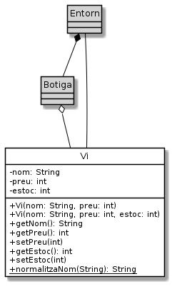

Exercici 05_01. La classe
Exercici 05_01. La classe vi¶
Context
Carpeta de lliurament:
05_01_vi/Continguts relacionats: El celler de la Bona Estrella
Com lliurar-lo: instruccions
[✓] Exercici amb autoavaluació
Enunciat
Una botiga de vi sense vi no és res. Així que començarem implementant aquesta classe tant important.

De moment no hem fet un anàlisi gaire exhaustiu de les propietats que ens interessarà tenir en compte sobre els vins. Ens estimem més oferir-li a la Sra. Estrella una primera versió en funcionament.
nom: el nom oficial del producte. Ex.
Roura blancEs codifica amb un
Stringi no pot ser buit ni contenir només espais.Es guarda sense espais a l’inici, ni al final, ni més d’un espai seguit entre mig. És a dir, si rebem
" Roura blanc ", el guardarem com a"Roura blanc". Tot el que no sigui espais, quedarà guardat tal i com es rebi. És a dir, no canviarem majúscules/minúscules. A aquesta modificació del nom li direm normalització i el mètode estàticnormalitzaNom()se n’encarregarà de realitzar-la. En cas quenormalitzaNom()rebi un nom no vàlid, retornarà el valor"nom no vàlid".Tota instància de
Viha de tenir un nom i, per tant, ha d’aparèixer especificat als constructor.Com que no ha de ser modificat mai, pot ser declarat
final.preu: l’import a la venda (en cèntims d’euro i sense iva)
Es codifica amb un enter, de manera que 12,5€ es guardaran com
1250. El preu mai no pot ser negatiu.El valor inicial pot ser modificat amb el mètode
setPreu(). En cas que se li indiqui un valor negatiu,setPreu()mantindrà el preu anterior.Tota instància de
Viha de tenir un preu i, per tant, ha d’aparèixer especificat als constructor.estoc: indica el nombre d’ampolles que es tenen d’aquest vi a la botiga.
El nombre d’ampolles no pot ser mai negatiu. Si s’intenta afegir un valor no vàlid, quedarà amb el valor anterior, o zero si no se n’havia especificat mai cap.
En crear-se un
Vi, l’estoc serà 0 a menys que s’especifiqui al constructor específic corresponent.
A banda, Vi sobreescriurà (override) el mètode toString() de
manera que es mostrin les dades del vi d’una manera còmoda. Una manera de
fer-ho seria:
1 2 3 4 5 | @Override
public String toString() {
return String.format("%n\tVi: %s%n\tPreu: %d%n\tEstoc: %d%n",
nom, preu, estoc);
}
|
Què haig de fer?¶
Implementa la classe Vi.
Per provar la teva classe, considera UsaVi.java:
1 2 3 4 5 6 7 8 9 10 11 12 13 14 | /*
* Aquesta classe fa una comprovació ràpida del funcionament de la classe
* Vi
*/
public class UsaVi {
public static void main(String[] args) {
System.out.println("Vi sense estoc" + new Vi("Roura blanc", 1234));
Vi vi = new Vi("Roura blanc", 1234, 24);
System.out.println("Vi amb estoc" + vi);
vi.setPreu(vi.getPreu() + 120); // incrementa preu del vi
vi.setEstoc(vi.getEstoc() - 10); // decrementa el nombre d'ampolles
System.out.println("Vi modificat" + vi);
}
}
|
L’execució haurà de generar la següent sortida:
$ java UsaVi
Vi sense estoc
Vi: Roura blanc
Preu: 1234
Estoc: 0
Vi amb estoc
Vi: Roura blanc
Preu: 1234
Estoc: 24
Vi modificat
Vi: Roura blanc
Preu: 1354
Estoc: 14